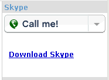

Call me!
Call me!
Download Skype
This block of Xoops allows to access to the options of the users that use the programa Skype, to makes telephones calls through internet, voice over IP.
For it, off course you must have installed the programa ,that you can get from the download site of Skype.1 - Install the block.
You follow this steps:
2 - to customize the block:
There are 3 versions of the block. You will see them in /skype/extras/blocks/. To choose one of them, copy the corresponding file, renaming it to skype.php in skype/blocks/skype.php. Default that comes installed is skype1.php. This versions are
|
Call me!
Download Skype |
|  |  |
|
3 - Add your name of contact of Skype.
In each file skipe1-2-3 php searches the lines where appears:
| /***** Here your user yam in Skype *****/ $skype_user = "name_skype_user"; |
and change it in the way that, if your name is "johnsmith", it must be this way... and be careful about respect the quotation marks and the semicolon at the end!
| /***** Here your user yam in Skype *****/ $skype_user = "johnsmith"; |
4 - Customize the images.
Can you also change the image that you leave in the higher part in the cases 1 and 3, copying and renaming some of this that comes included in /skype/extra/images/call?.png in /skype/images/call.png. You have the following ones availables:
call1.png |
call2.png |
call3.png |
call4.png |
 call5.png |
 call6.png |
 call7.png |
 call8.png |
Or can you customize some of this two that there are in /skype/extra/images/more/call?_empty.png, including your one text in it:
| call_empty1.png |
call_empty2.png |
And now... to talk!
For a world more human, communicate and without frontiers.